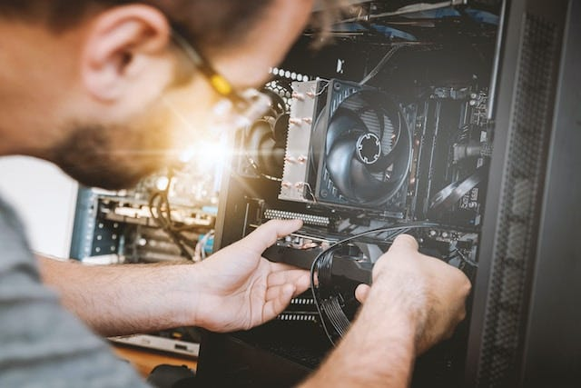
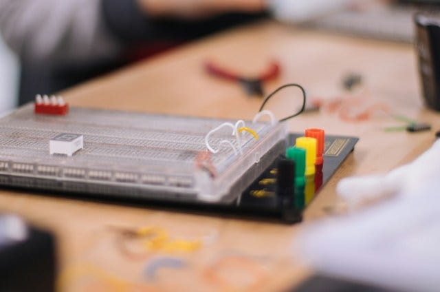
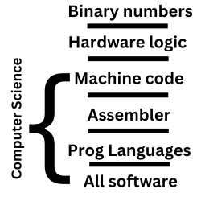
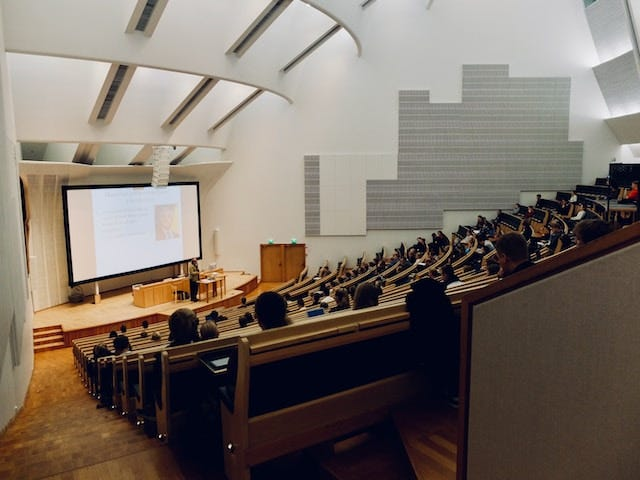
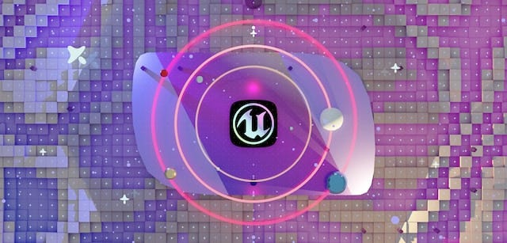

The core of computer science is programming. You need to know how to program to be an effective computer scientist. In school, colleges and such, if you major in computer science you must become at least a decent programmer to really benefit from the degree.
Preferably you become a really good one. At least to non-computer science individuals. Otherwise there is head knowledge but no application.
Often computer science specialists do not know programming. Though I would still consider them a computer scientist. A programmer is a computer scientist but a computer scientist is not necessarily a programmer.
At least not the good ones...
Computer science is the study of the interrelation of man and machine. This is interfaced with programming or the communication to the machine of what to do.
What kind of scientist which studies machines does not know how to communicate to it?
I know this is kind of a rant but I have met too many individuals who say they love to study computer science but not programming.
This is my face:
"What are you even talking about bro?" I mean I don't say it out loud but hey if we are studying the interrelations of man and machine should we not know the language between them?
I mean really?
What is computer science?
So, what is computer science?
It is the study of making machines bend to our will and the will of our customers using software.
This is unlike computer engineering or information systems.
Computer engineering is about hosting software using hardware.
Computer engineering is like a really advanced electrician.
They know how to make a motherboard from scratch and often design the hardware for some purpose.
Computer engineering is more niche than computer science.
I would not be surprised if computer engineering had a better job outlook than computer science.
Its just not as attractive as manipulating software.
Information systems is simply a mix of business and computer science.
Really, the information systems expert is a non-programmer tech business guy.
Someone who specializes in using software and not creating it.
Computer science is about creating software and how it works from the screen on your computer to the 0s and 1s on your hardware.
This is software not just on your personal computer, but all things the computer engineer would make.
From refrigerators to toasters, a computer scientist is creating the software for the device but a computer engineer is creating the device. While the information systems expert sells and manages the device using some software.
To be fair information systems as a discipline is really becoming the new business administration field.
To say technology is separate from business is like saying you are walking without shoes.
I don't know, maybe I drunk too much coffee this time around but shoes are like technology. Yea you can get pretty far without them, but can you really?
I mean try it...
To run a business without tech, we are just not in those times. It is about competition and everyone is wearing shoes.
My undergrad was in business administration. I actually had to opt in to taking computer science classes as optional credit.
Introduction to computing or programming fundamentals 1 sounded like an easy A.
But yea, business administration on its own I don't think is enough. You would definitely need public speaking, organizational leadership, natural social skills & a financial savvy to truly make it without technology.
Essentially you would need to be a natural communicator of man to man.
While a computer scientist is a communicator of man to machine.
What topics does computer science cover?
All software is written with code. Period. There is no software that has no code.
At its core computer hardware has designated math functions baked into the physicality of the machine.
The set of math functions is known as a logic unit.
It is the flipping of 1s and 0s in some fashion.
The graphics card, CPU and certain parts of the motherboard have logic units which process 1s and 0s using binary math.
Lets say there are 32 math functions for manipulating 1s and 0s baked into the CPU.
From there it is the computer scientists job for using the math functions in the CPU and GPU to create software.
Since the 1940s [1] we have been experimenting with these logic units.
Making the baked in math functions smaller and smaller.
The core of these math functions is the transistor.
As they get smaller so do our machines.
But, all the principles are the same.
Instead of punch cards there are cached and stored instructions in the RAM, ROM or harddisk called machine code.
The CPU processes machine code with its baked in math and the transistors switch on and off signals to other hardware.
From your screen to your mouse and keyboard, transistors are manipulating devices and other hardware using 1s and 0s and the math built-in.
As a computer scientist we abstract this math.
We communicate with these logic units, making all kinds of contraptions.
The job of the computer scientist is from the logic unit and up.
The stack of communication goes like this
Topics which use these logic units are...
- Programming languages
- Programming fundamentals
- Creating business systems through abstraction
- Database management
- Usage of existing software
- Software development in business
- Computer science niches like machine learning, web development, embedded systems or mobile development.
You can be a computer science person who doesn't know programming, yes.
But can you really be a car mechanic without taking apart and putting together a car?
I mean you can be, I guess.
I just wonder...
Computer science is so broad, people must specialize
It is not enough to say you are a computer scientist and study all things software.
In college this would work. The goal of college is to get a well-rounded education.
So for 1 semester you would study databases and operating systems. For the next its databases 2 and Algorithms.
Then for the next it is operating systems 2 and computer architecture.
I think as a student its great and amazing to focus on the topic of study for that semester.
You really will end up knowing a lot about general computer science.
But as a career gunning individual, computer science is so broad and each topic goes very deep in the work field.
You have to specialize and study one thing to become competitive enough to get a job.
For the past 3 months I have been studying cloud systems and Java and have become more and more competitive in that niche.
You will find many people do this, especially in graduate school.
They pick one topic and narrow down all computer science study to one niche.
Why? A generalist can do many things but not well. A specialist can do select skills very well.
If you find a niche, like say game engine development, then study it for a long while you can be competitive and even thrive in the topic.
Most jobs require a specific skillset anyway. You won't find a game engine developer using Salesforce in their game development or embedded systems in a web developer job.
At least not often.
But computer science is a discipline with a large number of topics to choose from.
If after 10 years of the same computer science related field you want to switch specialties, you can.
You can go from web development to game development and still be a computer scientist.
Given you have the energy, passion and health you just need to dedicate yourself long term to studying the niche.
Computer science is great in that way. In that you can re-use your previous skills as all you are doing is relating man to machine.
That is all computer science is, to relate man to machine.
Anywho, I hope you learned something...
Happy coding!
Resources
[1] Origin of the transistor: https://www.ericsson.com/en/about-us/history/products/other-products/the-transistor--an-invention-ahead-of-its-time
Want to learn more? Check out my article on What is the Computer Information Systems major?